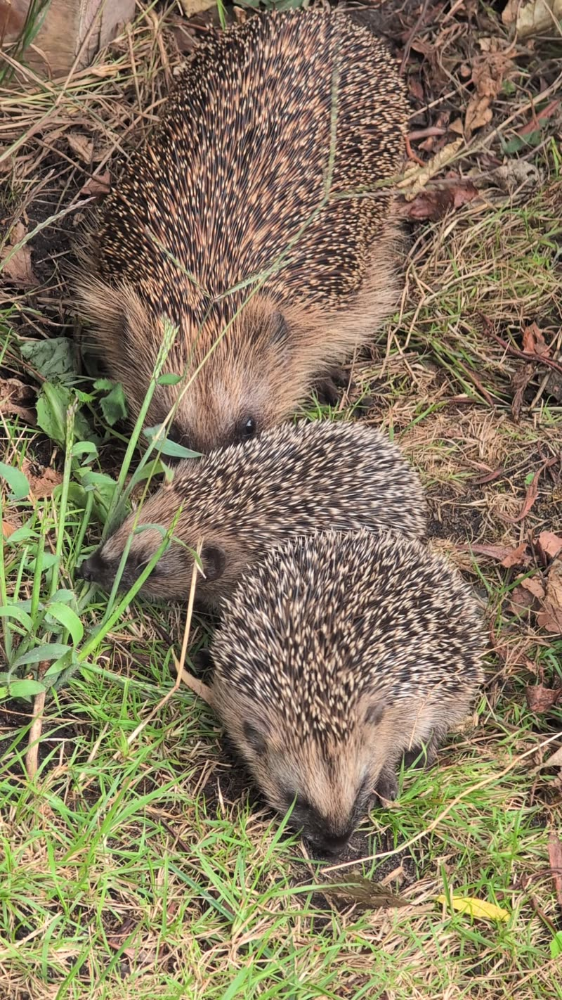

Egels in de Zijdes
Elke nacht scharrelen er egels door onze tuinen in Leiden. Met wildcamera's leggen we hun bezoekjes vast. Hier zie je de beelden, en lees je hoe jij jouw tuin egelvriendelijk maakt.
Bekijk de video's
Video's uit de wijk
Nieuwe beelden van onze wildcamera's verschijnen hier vanzelf. De nieuwste staan bovenaan.
Zo help je egels
Een egel loopt in één nacht wel een paar kilometer en bezoekt tientallen tuinen. Kleine aanpassingen maken voor hem een groot verschil.
Een gat in de schutting
Maak onderaan je schutting een opening van ongeveer 13 bij 13 cm, met gladde randen. Zo kunnen egels van tuin naar tuin.
Leuk weetje: toen onze egel zwanger was, hebben we het tunneltje van het egelhuis weggehaald. Anders paste de aanstaande moeder er niet meer doorheen!
Laat het een beetje rommelig
Een hoop bladeren of een takkenril is een gratis schuilplek en trekt insecten aan, het natuurlijke voedsel van de egel.
Een egelhuis
Zet een goed geventileerd egelhuis op een rustige, beschutte plek, uit de wind en niet in de volle zon. Vooral handig in een opgeruimde tuin.
Leuk weetje: je kunt een mooi egelhuisje in je tuin zetten, maar egels zijn met weinig tevreden. Een droog plekje met takken en bladeren is al genoeg!
Water en bijvoeren
Zet een ondiep schaaltje water neer. Bijvoeren kan met kattenbrokjes, kattenvoer met vlees of speciaal egelvoer.
Geen gif
Gebruik geen slakkenkorrels of andere bestrijdingsmiddelen. Een gifvrije, groene tuin zit vol eten voor egels.
Let op valkuilen
Leg een plankje of steen in je vijver als uitstapje, en kijk onder takkenhopen voordat je gaat maaien of stoken.
Egel in nood?
Egels zijn 's nachts actief. Zie je er overdag een rondlopen, of lijkt hij gewond, mager of ziek? Dan heeft hij waarschijnlijk hulp nodig.
Bel de dierenambulance of het landelijke nummer 144. Zij kunnen de egel naar een egelopvang brengen. Een opvang bij jou in de buurt vind je via Egelbescherming Nederland.
Let op: de egel is een beschermde soort. Vraag eerst advies voordat je hem oppakt.
De egel door het jaar
Egels houden een winterslaap, maar wanneer precies en hoe lang weten we eigenlijk niet goed. Daar is nog veel onderzoek voor nodig. Wat we door de jaren heen merken: vanaf oktober wordt de egel minder actief en komt hij minder vaak eten halen. De temperatuur speelt een grote rol. Rond 5 graden gaat de egel in winterslaap.
Toch is hij tot maart niet helemaal verdwenen. Tussendoor duikt hij af en toe op om wat te eten, alleen veel minder vaak. Zijn het in december een paar dagen 15 graden, dan kan het zomaar dat je hem weer even ziet. Dat is ook het mooie van de egel: hij is niet zo voorspelbaar!
Wie zijn wij?
Hoi! Mijn naam is Paul, en samen met vele egelliefhebbers uit de Zijdes zetten we ons in voor de egels in onze wijk. Zelf woon ik al ruim 15 jaar in de Merenwijk, een mooie groene wijk. Samen met de buurt hebben we een gemeentelijk stukje groen omgetoverd tot iets moois. Ook hebben we het trafohuisje van Liander beschilderd met een zwaan en een gans, naar de straten waar het staat.
Nu zijn we bezig met de egels in de Merenwijk, om beter in kaart te brengen waar ze leven. Met een groep 'egelvrienden' komen we af en toe bij elkaar. Sommigen rijden mee met de dierenambulance, en in de wijk liggen uitzetplekken voor egels uit de egelopvang in Zoetermeer.
Doe je mee?
We zoeken bewoners die egels willen bijvoeren, tellen en het gewoon leuk vinden om ze te helpen. Ook mooie beelden uit je eigen tuin zijn welkom. Spreek me gerust aan in de wijk, of neem contact op via mijn profiel op GroeneStad071, waar ook de Egelwerkgroep Merenwijk te vinden is.